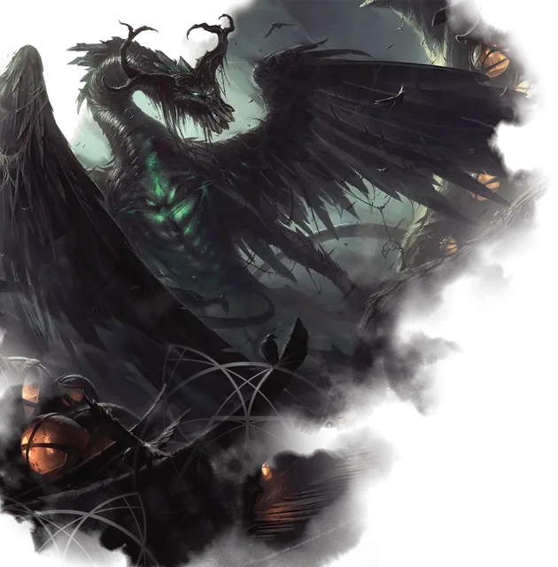

Беледрос Визерблум
Beledros Witherbloom
Громадный Дракон (Друид), нейтрально-добрый, именной НИП

Класс Доспеха 22 (природный доспех)
Хиты 444 (24к20 + 192)
Скорость 40 футов, плавая 40 футов, летая 80 футов
| мод | спас | ||
|---|---|---|---|
| СИЛ | 28 | +9 | +9 |
| ЛОВ | 14 | +2 | +9 |
| ТЕЛ | 27 | +8 | +15 |
| мод | спас | ||
|---|---|---|---|
| ИНТ | 18 | +4 | +4 |
| МДР | 28 | +9 | +16 |
| ХАР | 17 | +3 | +10 |
Навыки Восприятие +16, Магия +18, Медицина +16, Природа +18
Иммунитет к урону некротическая энергия, яд
Иммунитет к состояниям отравление
Чувства слепое зрение 120 футов, пассивное Восприятие 26
Языки Общий, Драконий, Друидический, Сильван
Опасность 24 (62000 опыта)
Бонус мастерства +7
Особенности
Легендарное сопротивление (3/день). Если Беледрос провалит спасбросок, она может вместо этого сделать спасбросок успешным.
Необычная природа. Беледрос не нуждается в воздухе, пище или питье.
Действия
Мультиатака. Беледрос совершает одну атаку Укусом и две атаки Когтями.
Укус. . Рукопашная атака оружием: +16 к попаданию, досягаемость 15 футов, одна цель. Попадание: 14 (1к10 + 9) колющего урона плюс 6 (1к12) урона некротической энергией.
Коготь. . Рукопашная атака оружием: +16 к попаданию, досягаемость 10 футов, одна цель. Попадание: 12 (1к6 + 9) рубящего урона. Если целью является существо Огромного размера или меньше, оно падает ничком.
Разлагающее дыхание (Перезарядка 5-6). Беледрос выдыхает разлагающую энергию 90-футовым конусом. Каждое существо в этой области должно совершить спасбросок Телосложения Сл 23, получая 39 (6к12) урона некротической энергией и 39 (6к12) урона ядом при провале или половину этого урона при успехе. Существо, получающее урон от дыхания, не может восстанавливать хиты до начала следующего хода Беледроса.
Поток миазмов. Беледрос превращается в клубящееся облако зеленого тумана и может переместиться на половину своей скорости полета, не провоцируя атак, после чего вновь принимает свою истинную форму. Во время этого перемещения она может перемещаться через существ и предметы, как если бы они были труднопроходимой местностью. Если она проходит сквозь существо, оно должно преуспеть в спасброске Телосложения Сл 23, иначе станет отравленным до конца своего следующего хода. Если Беледрос завершает это перемещение внутри объекта, она получает 5 (1к10) урона силовым полем и выталкивается в ближайшее свободное пространство.
Использование заклинаний. Беледрос накладывает одно из следующих заклинаний, используя Мудрость в качестве базовой характеристики и без использования материальных компонентов:
• 1/день каждое: высшее восстановление [greater restoration], множественное лечение ран [mass cure wounds], рост растений [plant growth], возрождение [revivify], разговор с мёртвыми [speak with dead];
Легендарные действия
Беледрос может совершать 3 легендарных действия, выбирая из указанных ниже вариантов. Лишь одно легендарное действие может быть совершено за раз, и только в конце хода другого существа. Беледрос восстанавливает истраченные действия в начале своего хода.
Коготь. Беледрос совершает одну атаку Когтем.
Поток Миазмов (стоит 2 действия). Беледрос использует Поток миазмов.
Изобилие жизни (стоит 3 действия). Беледрос волшебным образом призывает 1к4 талисмана–вредителя [pest mascot] в незанятых пространствах, которые она может видеть в пределах 60 футов. Вредители подчиняются её командам и начинают свой ход сразу после нее. Любое существо, кроме вредителя, получает 9 (2к8) урона ядом, если оно начинает свой ход в пределах 5 футов от одного или нескольких из этих вредителей. Когда хиты одно из этих вредителей падают до 0, Беледрос восстанавливает 9 хитов. Эти вредители исчезают через 10 минут, когда Беледрос умирает или когда она снова использует это действие.
Описание
Дракон Беледрос владеет переплетенной магией жизни и смерти. Её сила питается от жизненной силы, текущей через живых существ и мир природы. Она манипулирует этой энергией, чтобы дать исцеление и жизнь или принести смерть и разложение. Её мастерство в этой магии поддерживает ее собственную жизненную силу даже без поглощения пищи, питья или даже воздуха.
Она основала факультет Визерблум, чтобы передать свое понимание естественного цикла. Она надеялась создать поколения управляющих, которые будут использовать ее учения для защиты природы и помощи другим. В соответствии с дихотомической природой ее философии и магии, она рассматривает более опасные аспекты природы, включая неизбежность смерти и распада, как естественные и неотъемлемые части существования.